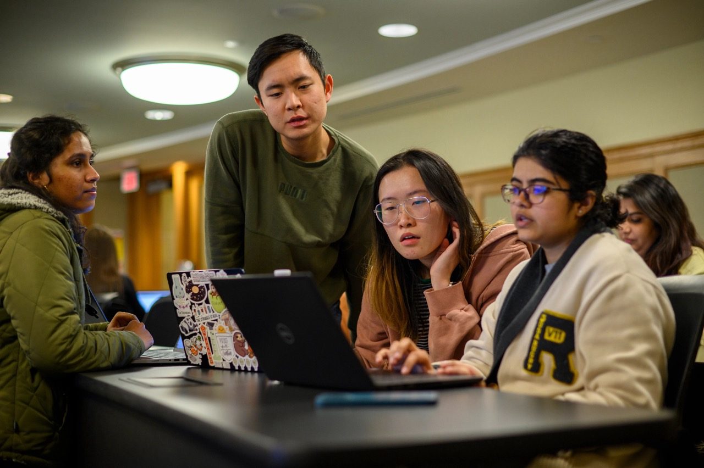

UMSI Peer Tutoring Program
In partnership with our UMSI faculty, the UMSI Peer Tutoring program is an opportunity for UMSI students and students taking UMSI courses to engage with peer tutors and receive assistance and support in UMSI courses.
For more information regarding student support and tutoring, please email umsi.academicsuccess@umich.edu.
Welcome!

The Academic Success Team at UMSI is dedicated to supporting students inside and outside of the classroom. This site is dedicated to connecting students to tutoring and academic support resources. Resources covered on this site include:
UMSI PROGRAMMING PEER TUTORING
UMSI Programming Peer Tutoring Information Available for the below courses:
- SI 106 Programs, Information, and People
- SI 206 Data-Oriented Programming
- SI 506 Programming I
- SI 507 Intermediate Programming
- General Python support
If you have questions regarding the Programming Peer Tutoring, you can email Professor Anthony Whyte at arwhyte@umich.edu and/or the UMSI Academic Success Team at umsi.academicsuccess@umich.edu for support.
UMSI MATH PEER TUTORING
Please note, we have UMSI Math Peer Tutors available for both SI and SIADS courses and for general math related support. Please review the course offerings and support available in the below sections to identify the UMSI Math Peer Tutors that best support your needs.
UMSI Math Peer Tutoring Information Available for the below subject areas:
- Linear algebra
- Statistics
- General Math support
If you have questions regarding the Programming Peer Tutoring, you can email Professor Anthony Whyte at arwhyte@umich.edu and/or the UMSI Academic Success Team at umsi.academicsuccess@umich.edu for support.